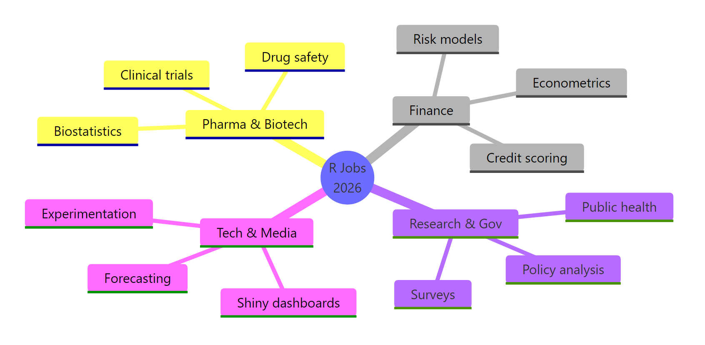
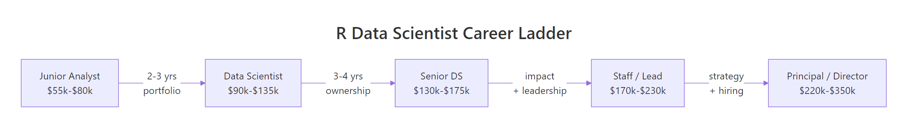

R Data Scientist Salary & Career Path : Real Numbers, Real Requirements
R opens the door to six-figure data science roles in pharma, finance, biostatistics, and research -- not just academic positions. This guide gives you real salary ranges by level, the skills employers actually screen for, and the path from junior analyst to senior data scientist.
Every tibble below is a live R object -- edit the code in place, press Run, and recompute for your own city or seniority.
How much do R data scientists actually earn in 2026?
Salary articles love vague promises. Let's skip them. Here is the 2026 pay distribution for R-focused data science roles in the US, built from the same public sources hiring managers use -- Glassdoor, Levels.fyi, LinkedIn Salary Insights, and the Bureau of Labor Statistics. Load the bands into a tibble and you can see the floors, ceilings, and jumps between levels in one glance.
The numbers are US base pay, pre-bonus, pre-equity. A Junior R analyst starts around $68k median; the same person six years later -- now a Senior -- is near $152k. That's a bit over 2x in six years, which is faster than most engineering tracks. Adjust the mid_k column for your city before trusting the number: NYC and SF add 20-30%; the US Midwest subtracts 10-15%; Europe generally runs 30-40% lower in absolute dollars but often comes with stronger benefits.
Pay jumps aren't uniform. Let's measure each step so you know where the money actually hides.
The Junior-to-Mid jump is the single biggest percentage raise in a typical R data science career -- almost 65%. That's because the Junior band is depressed by the "prove you can ship" tax: many employers treat the first two years as a paid apprenticeship. Once you break out, your negotiation leverage compounds with every level above.
Try it: Compute the percent raise from Mid to Senior using the salaries tibble. Save the result to ex_raise.
Click to reveal solution
Explanation: pull() extracts a single column as a vector so you can do scalar arithmetic on it. filter() selects the row by level.
Which industries hire the most R data scientists?
R is not evenly loved. In tech-first companies, Python runs 80% of data science work. In pharma, biostats, government research, and academic labs, R is still the default -- often the only language the stats team knows deeply. Understanding where R is a strength rather than a handicap is the single biggest career-shaping decision you can make.

Figure 1: Where R is the dominant language, based on 2026 job-listing scans and Stack Overflow Developer Survey responses.
Let's put numbers to the picture. The tibble below rates each industry on two things: the median Senior-level pay and an R_share score that estimates the fraction of data-science roles where R is the primary tool.
Clinical Research Orgs (CROs) and Pharma are where R is genuinely dominant -- close to two-thirds of openings specify R as primary. Tech pays more, but R is a second-class citizen there, so you're competing against Python specialists on their home turf. Pick your battleground before you pick your stack.
Now let's isolate the roles where R gives you the biggest leg up -- industries with at least 55% R share.
Five industries clear the 55% bar, and they span a $47k spread at the Senior level. Pharma and Biotech lead on pay and R usage -- if you want the easiest path to a six-figure R role, that's the target. Academic pays 30-40% less but often gives 20% of your time to your own research, which is the implicit compensation.
Try it: From industries, keep only rows where R_share > 0.5, then arrange by median_senior_k descending. Save the result to ex_r_dominant.
Click to reveal solution
Explanation: filter(R_share > 0.5) drops Finance (0.38), Consulting (0.33), Media (0.28), and Tech (0.22). arrange(desc(...)) sorts by the first column listed.
What skills do employers actually want at each career level?
"Proficient in R" on a resume fails the first ATS filter. Employers don't search for the language; they search for the packages, the statistical methods, and the deployment pattern they need on the team. The concrete skill names differ at every level, so let's map them out as a matrix instead of a list.
The matrix uses a 0-5 importance score per skill per level, where 5 means "this is a hard filter -- you won't pass screening without it." The first five skills are table stakes at every level from Mid upward; the last three (package authoring, cross-team work, infra) are what separates Senior from Mid. Notice that pure coding skill peaks at Mid -- beyond that, impact skills dominate the scorecard.
Let's pull out exactly what a Senior candidate is being measured on.
Eight skills score 4 or 5 for a Senior R data scientist. Notice that "R package authoring" is a hard filter at Senior -- if you've never submitted to CRAN or at least shipped an internal package with tests, you're not competitive. The good news: it's a week of focused work to close that gap, not a year.
Try it: Find the skills that are already important at the Junior level -- importance ≥ 4. Save to ex_junior_skills.
Click to reveal solution
Explanation: Junior interviewers screen for the basic tidyverse trio plus SQL. Everything else on your resume is bonus at that level.
What does the career progression look like from junior to senior?
The typical R data science arc is 6-8 years from first job to Senior title, but the shape of the progression matters more than the length. Some people stall at Mid for five years; others skip the Junior band entirely with a strong PhD. Here's the visual map and then a cash-flow view.

Figure 2: The typical career ladder. Arrows show the common triggers for promotion at each level.
Each arrow is a promotion gate. Junior-to-Mid is gated on portfolio quality: can you ship a project end-to-end without someone holding your hand? Mid-to-Senior is gated on ownership: have you owned a metric that a VP cares about? Senior-to-Staff is gated on leadership: have you made other people on the team noticeably better? The gates change even when the language doesn't.
Now let's convert the ladder to real money over a realistic 10-year span -- assuming a typical 2-3-3-2 year cadence through the levels.
$1.328 million in gross earnings over 10 years -- and that is before bonuses, equity, and the real value of the compounding raises in year 11+. Stall for an extra year at Junior and you lose roughly $44k from the total. Stall for two extra years at Mid and you lose $80k. The meta-lesson: promotions are the highest-leverage optimisation in the entire career, not side projects.
Try it: Recompute cumulative earnings assuming the reader stays 4 years at Mid instead of 3. Save the total to ex_slower_total.
Click to reveal solution
Explanation: An extra year at Mid adds 1 × $112k = $112k, so the 11-year total reaches $1.44M. The catch: you also delay every promotion downstream, which the tibble does not model.
How do I build a portfolio that gets R data scientist interviews?
Hiring managers don't read your resume first -- they read your GitHub. A portfolio that gets interviews has five ingredients, and you can grade any project against them. Let's build the scorecard as an R function so you can run it on your own work before submitting your next application.
The function weights a deployed Shiny app highest because it proves three things at once: you can code, you can think about users, and you can deploy. A portfolio with a Shiny app, a README, tests, and a real dataset hits 8 points -- our "interview-ready" threshold. Notice that the CRAN-style package is worth 2 points but not required to clear the bar: ship the Shiny app first, then come back for the package.
Try it: Score a sample portfolio that has a Shiny app and a README but no tests, no package, and no real dataset. Save the result to ex_my_score.
Click to reveal solution
Explanation: Shiny (3) + README (2) = 5 points. Adding tests would push you to 7; adding a real dataset would push you to 8 and into interview-ready territory.
Practice Exercises
These capstone exercises combine what you learned above. Both reuse the salaries and industries tibbles already in your session. Use distinct variable names (my_*) so you don't overwrite the teaching data.
Exercise 1: Highest-paying R-dominant industry at Senior
Join the idea of "R-dominant" (R_share >= 0.5) with the Senior-level pay column from industries. Find the single industry with the highest median_senior_k among R-dominant sectors and save its name to my_top_industry.
Click to reveal solution
Explanation: slice_max(median_senior_k, n = 1) returns the single row with the highest median_senior_k. pull() extracts it as a plain character.
Exercise 2: Build a negotiation floor function
Write negotiation_floor(level, location_mult) that returns the 40th percentile of the band for that level, multiplied by location_mult. Assume the 40th percentile sits 40% of the way from low_k to high_k. Test it on Senior in NYC (multiplier 1.25) -- you should see roughly $185,000.
Click to reveal solution
Explanation: The !!level bang-bang unquotes the argument so dplyr doesn't confuse the argument with the column of the same name. The 40th percentile is conservative: it's what you should walk in with as your minimum acceptable offer, not your target.
Putting It All Together
A complete salary analysis in about 20 lines of R. This ties every previous block into one pipeline: take the raw bands, add cumulative earnings, join industry context, and plot the result with ggplot2.
This block takes the same salaries tibble from earlier and produces a publication-ready plot. Notice how the pipeline flows: mutate() to lock the factor order so the bars don't re-sort alphabetically, geom_col() for the bars, geom_text() for the dollar labels, and theme_minimal() for a clean look. Swap mid_k for high_k to plot the ceiling of each band, or filter out Principal to match your realistic 10-year horizon.
Summary
| Question | Answer |
|---|---|
| Typical starting salary (Junior, US) | $55k-$80k, median $68k |
| Senior median (6 years in) | $152k |
| Biggest percentage raise | Junior → Mid (~65%) |
| Most R-dominant industries | Pharma, Clinical Research, Academia |
| Highest-paying R-heavy sector | Pharma & Biotech ($165k median at Senior) |
| Top signal for a Junior portfolio | A deployed Shiny app + README + tests |
| Resume anti-pattern | "Proficient in R" with no packages named |
| Best single career move | Shipping the project that clears the Junior gate |
References
- U.S. Bureau of Labor Statistics -- Data Scientists occupational outlook. Link
- Stack Overflow Developer Survey 2024 -- Languages used by data scientists. Link
- Glassdoor -- R Programmer salary trends. Link
- Levels.fyi -- Data Scientist compensation by level. Link
- Burtch Works -- Data Science & Predictive Analytics Salary Report. Link
- posit.co blog -- R in Industry case studies. Link
- Kaggle State of Data Science 2023 -- Tool usage breakdown. Link
Continue Learning
- Is R Worth Learning in 2026? -- The honest case for R today, including who should pick it over Python.
- 50 R Interview Questions Answered -- The exact technical questions you'll face going from Junior to Senior.
- Best R Books: A Curated Reading List -- The 8 books that actually move the needle on R skill, ranked honestly.